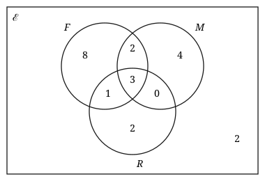
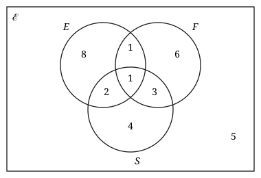

<script src="/assets/redirect.js"></script>
<section class="theory" data-section="IGCSE-24.4">
<h2>24.4 Conditional probability</h2>
<p class="src">Based on Cambridge IGCSE Mathematics Core and Extended Coursebook (Karen Morrison and Nick Hamshaw), Chapter 24 Probability using tree diagrams and Venn diagrams, printed pp.843–851. Own wording and new numbers, following the coursebook idea of a probability given that an event has happened, from Venn diagrams and from choices made without replacement.</p>
<p class="key-words"><strong>Key words:</strong> <em>conditional probability</em>, <em>without replacement</em>, <em>dependent events</em>, <em>Venn diagram</em>, <em>tree diagram</em></p>
<h3>Probability given a condition</h3>
<p>A <strong>conditional probability</strong> is the probability of an event given that another event has happened. It is written \(P(B\mid A)\), read 'the probability of \(B\) given \(A\)'. The condition reduces the set of possible outcomes.</p>
<h3>From a Venn diagram</h3>
<p>If an element is chosen from \(A\) only, the denominator is \(\mathrm{n}(A)\), not \(\mathrm{n}(\mathscr{E})\):</p>
<p>\[P(B\mid A)=\dfrac{\mathrm{n}(A\cap B)}{\mathrm{n}(A)}.\]</p>
<h3>Without replacement</h3>
<p>When objects are chosen one after another <strong>without replacement</strong>, the second choice depends on the first, so the events are <strong>dependent events</strong>. On a <strong>tree diagram</strong> the second set of branches changes: after a red counter is taken there is one fewer red and one fewer counter in total. The branches on the second stage are conditional probabilities.</p>
<p>\[P(\text{red, then red})=\dfrac{r}{n}\times\dfrac{r-1}{n-1}.\]</p>
<p>'At least one' can still be found as \(1-P(\text{none})\).</p>
<div class="worked-example">
<h4>Worked example 1: Given a condition</h4>
<p class="src">Coursebook, 24.4, conditional probability from a Venn diagram. New numbers.</p>
<p>In a class of 30, 18 study art, 12 study music and 5 study both. A student who studies art is chosen at random. Find the probability that the student also studies music.</p>
<ol class="steps">
<li>The choice is from the 18 art students <span class="mark">M1</span></li>
<li>\(P(\text{music}\mid\text{art})=\dfrac{5}{18}\) <span class="mark">A1</span></li>
</ol>
<p class="final"><strong>Answer:</strong> \(\dfrac{5}{18}\)</p>
</div>
<div class="worked-example">
<h4>Worked example 2: Without replacement</h4>
<p class="src">Coursebook, 24.4, dependent events on a tree diagram. New numbers.</p>
<p>A bag contains 5 red and 3 blue beads. Two beads are taken at random without replacement. Find the probability that at least one bead is blue.</p>
<ol class="steps">
<li>\(P(\text{red, red})=\dfrac{5}{8}\times\dfrac{4}{7}=\dfrac{20}{56}\) <span class="mark">M1</span></li>
<li>\(P(\text{at least one blue})=1-\dfrac{20}{56}\) <span class="mark">M1</span></li>
<li>\(=\dfrac{36}{56}=\dfrac{9}{14}\) <span class="mark">A1</span></li>
</ol>
<p class="final"><strong>Answer:</strong> \(\dfrac{9}{14}\)</p>
</div>
<h3>Common mistakes</h3>
<ul><li>Dividing by the whole of \(\mathscr{E}\) when the choice is only from one set.</li><li>Keeping the same denominator for the second choice when there is no replacement.</li><li>Forgetting that 'different colours' has two paths on the tree.</li></ul>
<h3>Past paper</h3>
<p class="src">0580/22/O/N/16 Q15, official QP and official MS.</p>
<p></p><p>The Venn diagram shows the number of people who like films \((F)\), music \((M)\) and reading \((R)\).</p><p>(a) Find</p><p>(i) \(\mathrm{n}(M)\), [1]</p><p>(ii) \(\mathrm{n}(R\cup M)\). [1]</p><p>(b) A person is chosen at random from the people who like films.</p><p>Write down the probability that this person also likes music. [1]</p><p>(c) On the Venn diagram, shade \(M'\cap(F\cup R)\). [1]</p>
<details><summary>Mark scheme</summary>
<ol class="steps">
<li>(a)(i) \(2+4+3+0=9\) <span class="mark">B1</span> Official MS: 9, 1.</li>
<li>(a)(ii) \(12\) <span class="mark">B1</span> Official MS: 12, 1.</li>
<li>(b) \(\dfrac{2+3}{8+2+3+1}=\dfrac{5}{14}\) <span class="mark">B1</span> Official MS: 5/14, 1.</li>
<li>(c) The regions of \(F\) and \(R\) that are outside \(M\) shaded (\(F\) only, \(R\) only, and \(F\cap R\) outside \(M\)) <span class="mark">B1</span> Official MS: 1; diagram with F only, R only and the part of F ∩ R outside M shaded.</li>
</ol>
</details>
<h3>Past paper</h3>
<p class="src">0580/22/M/J/24 Q23, official QP and official MS.</p>
<p></p><p>The Venn diagram shows information about the number of students in a class.</p><p>Some study English \((E)\), some study French \((F)\), some study Spanish \((S)\) and some do not study any of these languages.</p><p>(a) Find \(\mathrm{n}\bigl((E\cup F)'\cup S\bigr)\). [1]</p><p>(b) One student is picked at random from those who study Spanish.</p><p>Find the probability that this student studies exactly two languages. [2]</p>
<details><summary>Mark scheme</summary>
<ol class="steps">
<li>(a) \(4+5+2+1+3=15\) <span class="mark">B1</span> Official MS: 15, 1.</li>
<li>(b) \(\dfrac{2+3}{2+1+3+4}\) <span class="mark">M1</span> Official MS: M1 for (2 + 3)/(2 + 1 + 3 + 4) oe or 1 − (4 + 1)/(2 + 1 + 3 + 4) oe, with either the numerator or denominator correct.</li>
<li>(b) \(=\dfrac{1}{2}\) <span class="mark">A1</span> Official MS: 1/2 oe nfww, 2 marks.</li>
</ol>
</details>
<h3>Past paper</h3>
<p class="src">0580/21/M/J/18 Q20, official QP and official MS.</p>
<p>(a) A box contains 3 blue pens, 4 red pens and 8 green pens only.</p><p>A pen is chosen at random from the box.</p><p>Find the probability that this pen is green. [1]</p><p>(b) Another box contains 7 black pens and 8 orange pens only.</p><p>Two pens are chosen at random from this box without replacement.</p><p>Calculate the probability that at least one orange pen is chosen. [3]</p>
<details><summary>Mark scheme</summary>
<ol class="steps">
<li>(a) \(\dfrac{8}{15}\) <span class="mark">B1</span> Official MS: 8/15 oe, 1.</li>
<li>(b) \(P(\text{no orange})=\dfrac{7}{15}\times\dfrac{6}{14}\) <span class="mark">M1</span> Official MS: 168/210 oe, 3 marks; M2 for 1 − 7/15 × 6/14 oe or 3(7 × 8/(15 × 14)) oe; or M1 for 7/15 × 6/14 or 7/15 × 8/14 or 8/15 × 7/14 oe.</li>
<li>(b) \(1-\dfrac{7}{15}\times\dfrac{6}{14}\) <span class="mark">M1</span> Official MS: second method mark of M2 for 1 − 7/15 × 6/14 oe.</li>
<li>(b) \(=\dfrac{168}{210}\) <span class="mark">A1</span> Official MS: 168/210 oe.</li>
</ol>
</details>
<div class="quick-check">
<h4>Quick check 1</h4>
<p>A Venn diagram has 9 elements in \(A\) only, 5 in \(A\cap B\), 4 in \(B\) only and 2 outside. An element is chosen at random from \(A\). Find the probability that it is also in \(B\).</p>
<details><summary>Worked solution</summary>
<ol class="steps"><li>\(\mathrm{n}(A)=14\)</li><li>\(\dfrac{5}{14}\)</li></ol>
<p class="final"><strong>Answer:</strong> \(\dfrac{5}{14}\)</p>
</details>
</div>
<div class="quick-check">
<h4>Quick check 2</h4>
<p>A bag has 4 red and 6 green counters. Two are taken at random without replacement. Find the probability that both are red.</p>
<details><summary>Worked solution</summary>
<ol class="steps"><li>\(\dfrac{4}{10}\times\dfrac{3}{9}\)</li></ol>
<p class="final"><strong>Answer:</strong> \(\dfrac{12}{90}=\dfrac{2}{15}\)</p>
</details>
</div>
<div class="quick-check">
<h4>Quick check 3</h4>
<p>A bag has 3 red and 5 white balls. Two are taken at random without replacement. Find the probability that they are different colours.</p>
<details><summary>Worked solution</summary>
<ol class="steps"><li>\(\dfrac{3}{8}\times\dfrac{5}{7}+\dfrac{5}{8}\times\dfrac{3}{7}\)</li></ol>
<p class="final"><strong>Answer:</strong> \(\dfrac{30}{56}=\dfrac{15}{28}\)</p>
</details>
</div>
</section>
